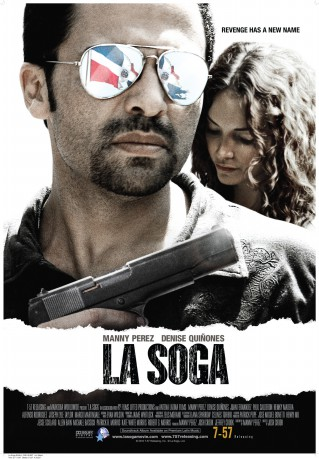

#8787 La Soga - Wir wurden alle unschuldig geboren
 
 IMDB-Wertung: 6.3 / 10
IMDB-Wertung: 6.3 / 10  Metascore: 0
Metascore: 0 
A cop works against his country's corrupt government in order to find justice on a case.
Jahr: 2009
Dauer: 102 Minuten
FSK: 16
Land: Dominikanische Republik Studio: Sunfilm EntertainmentTonspuren:
Untertitel: Deutsch,
Auflösung: 1080p (1920x784) Größe: 4577 MB
Genre: Drama, Krimi
Regisseur: Josh Crook
Drehbuch: Manny Perez
Soundtrack: Evan Wilson
Darsteller:
 Manny Perez als Luisito
Manny Perez als Luisito- Denise Quiñones als Jenny
 Juan Fernández als General Colon
Juan Fernández als General Colon Paul Calderon als Rafa
Paul Calderon als Rafa Hemky Madera als Tavo
Hemky Madera als Tavo Joseph Lyle Taylor als Simon Burr
Joseph Lyle Taylor als Simon Burr Margo Martindale als Flannigan
Margo Martindale als Flannigan Jaime Tirelli als Belgrado
Jaime Tirelli als Belgrado- Alexander Estrella als Margarita's Boyfriend
- Robert Haley als NYPD Officer
- Jean Jean als Fellito Polanco
 Anibal O. Lleras als Rafa's crew #1
Anibal O. Lleras als Rafa's crew #1- Anaís Martínez als NYC Thug's Wife
- Pachy Méndez als Rafa's Wife
- Sharlene Taulé als Margarita
- Celines Toribio als Presidential's Assistant
- Edilsy Vargas als Julia
- Kalent Zaiz als Pipi
- Alfonso Rodríguez als Franco
- Fantino Fernandez als Young Luisito
- Robinson Aybar als Efrain
- Nelson Baez als The Butcher
- Ericson Batista als Boy at the hotel room
- Carmen Brugal als Dona Irma
- Coco Cabrera als Carlos Batista
- Leslie Cepeda als Young Jenny
- Mery Collado als General Colon's Wife
- Cruzmonty als Pedophile
- Danilo als Bully at Prison
- Guillermo Estrella als Jenny's Suitor
- Carmen Fernandez als Nurse
- Janet Gonzalez als Girl in Rafa's Apartment
- Elvira Grullón als Luisito's Aunt
- Henry Santos Jeter als Rafa's Crew #2
- Danny Lebron als Frano's Henchman in NYC
- Ramona Liriano als Dona Irma's Maid
- Joshua Lucero als Domino Player
- Fernando Luna als Carnival Mask Dancer
- Iban Marrero als NYPD officer
- Anthony Marte als President Fernando Linares
- Yuri J. Martinez als Guard #1
- Miguel Ángel Martínez als Luisito's Father
- Gerardo Mercedes als Wellington's Crew #1
- Sixta Morel als Reporter
- Jose Perez als Rafa's Cousin
- Nuria Piera als Nuria Piera
- Diego Rafael als Young Tavo
- Danilo Rodriguez als Felipe Manuel Peralta
- Jalsen Santana als Guard #2
- Shino als Wellington
Datei: X:\2009(G-M)\La Soga - Wir wurden alle unschuldig geboren (2009, FSK16, 1920x784).mkv seit 30.04.2018
Festplatte: HD 2009(G-Z)-2010(A-F)
 Es gibt insgesamt 82 Filme in der Gruppe '2009(G-M)'
Es gibt insgesamt 82 Filme in der Gruppe '2009(G-M)'